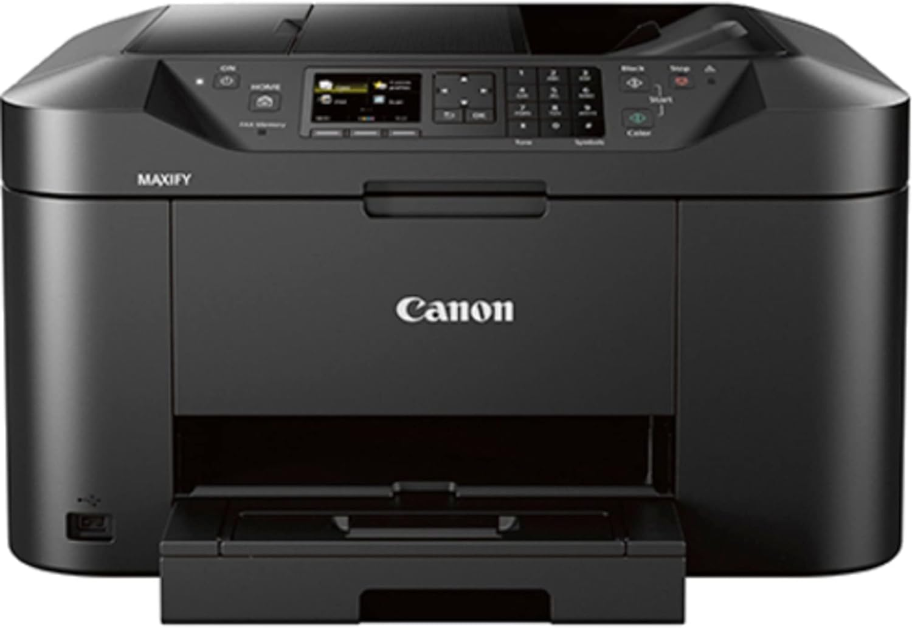

Impressora

A impressora é um equipamento essencial para transformar documentos digitais em físicos. Existem modelos simples, que apenas imprimem, e
multifuncionais, que também escaneiam e copiam. Elas podem ser a jato de tinta, mais comuns e acessíveis, ou a laser, que oferecem maior velocidade e economia a
longo prazo.
No ambiente de trabalho, a impressora é indispensável para gerar relatórios, contratos e outros documentos importantes. Modelos multifuncionais são
ideais para escritórios que precisam digitalizar e copiar documentos com frequência. Um exemplo é a Impressora HP 2874 Multifuncional Deskjet Ink Advantage, que oferece boa
qualidade e custo-benefício.
Compra